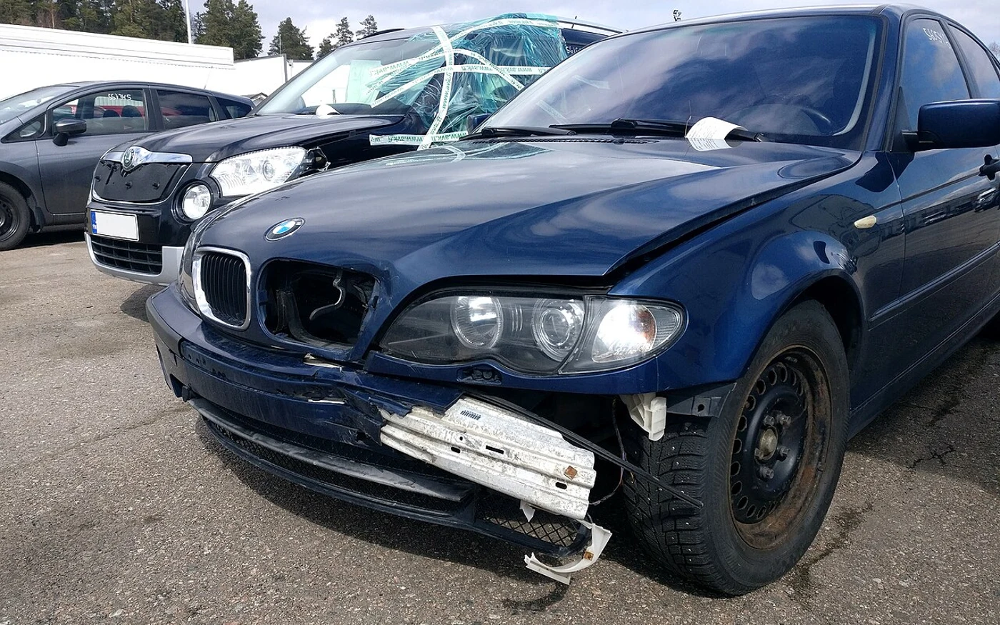
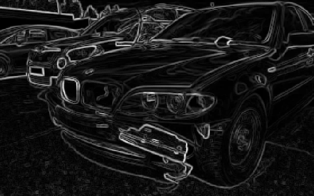
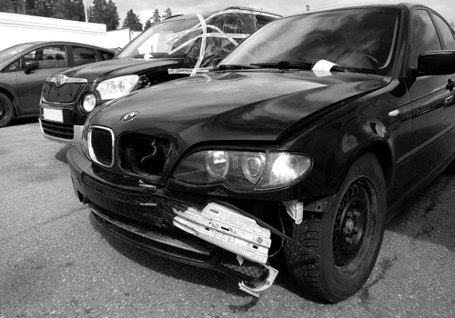
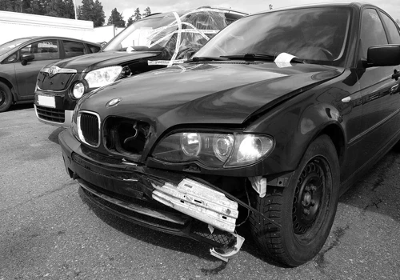
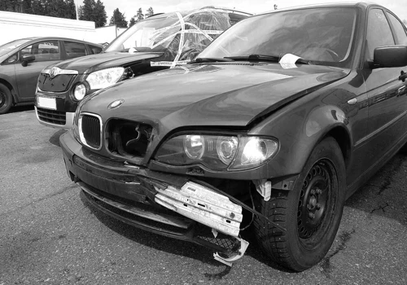
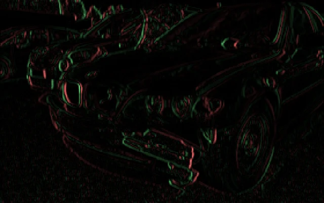
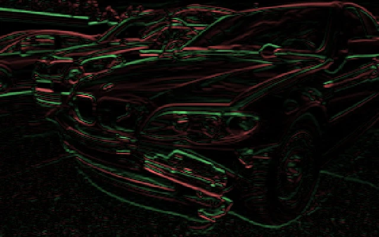

Ves una foto real
Todos los ejemplos parten de la misma fotografía real de un vehículo dañado.
En la Clase 16 convertiste texto en números. Ahora conviertes una fotografía real en números, y construyes una red neuronal convolucional (CNN) que aprende a reconocer patrones visuales — usando la misma foto de daño vehicular en toda la clase.


de confianza (Misión 7 · softmax)
De la foto real a una predicción, pasando por un mapa de características real — sin ilustraciones decorativas.
Mismo formato que en clases anteriores: observas, entiendes el mecanismo, y lo aplicas.
Todos los ejemplos parten de la misma fotografía real de un vehículo dañado.
Filtros, mapas de características y pooling calculados de verdad sobre esa foto, no ilustraciones.
Un simulador de filtros, un notebook de Colab con Keras real, y un generador de arquitectura CNN.
En las Clases 6-15 usaste tablas. En la Clase 16, texto. Una fotografía es un tercer tipo de dato: una cuadrícula de números — uno por cada pixel y canal de color.



Una imagen a color son en realidad tres matrices de números superpuestas — roja, verde y azul (RGB) — extraídas de verdad de la fotografía de esta clase.
¿Cómo puede un modelo "ver" que una zona de la foto tiene un golpe, si todo lo que recibe son números de 0 a 255 por pixel? Esta clase responde eso de principio a fin.
Cada pixel de una foto a color tiene tres valores (rojo, verde, azul), cada uno entre 0 y 255. Una foto de 1400×875 pixeles con 3 canales son más de 3.6 millones de números.
Una matriz es simplemente una tabla de números, como una hoja de cálculo con filas y columnas. Un pixel (de "picture element", elemento de imagen) es cada uno de esos casilleros: el punto de color más pequeño posible en una foto digital. Una foto en blanco y negro es una sola matriz de pixeles, cada uno de 0 (negro) a 255 (blanco). Una foto a color son tres matrices superpuestas — una por cada canal de color: rojo, verde y azul (RGB) — que la computadora combina para mostrar el color final de cada pixel. Por eso decimos que una imagen "es" una matriz de números: no hay nada más ahí, ni magia ni forma — solo números que un modelo puede sumar, multiplicar y comparar.
Estos son 9 pixeles reales tomados de la fotografía de esta clase, reducidos a una cuadrícula de 3×3 para poder mostrarlos.
En las Clases 14 y 15 viste una red densa procesando números tabulares. Para una imagen, esa misma estrategia (aplanar todo y conectar cada pixel a cada neurona) es carísima e ineficiente.
En una red densa, cada neurona de una capa se conecta con TODAS las neuronas de la capa anterior. Cada una de esas conexiones tiene un número que el modelo debe ir ajustando durante el entrenamiento — eso es un parámetro. Entre más conexiones, más parámetros hay que aprender, y más lento y costoso es entrenar el modelo. Si a una red densa le mandas una imagen pixel por pixel, el número de conexiones se dispara — lo ves con números reales abajo.
Para procesar la misma imagen, una capa densa necesita más de 4,000 veces más parámetros que una capa convolucional (números reales de esta clase).
Una capa convolucional reutiliza el mismo filtro pequeño en toda la imagen, en vez de aprender un peso distinto para cada pixel. Por eso es mucho más eficiente y generaliza mejor.
CNN son las siglas de "Convolutional Neural Network" (Red Neuronal Convolucional): un tipo de red neuronal diseñada específicamente para imágenes. Su pieza central es un algoritmo llamado convolución. Un filtro (o kernel) es una pequeña matriz de números — piensa en él como una plantilla que busca un patrón específico, por ejemplo "una línea vertical". La convolución multiplica los números del filtro contra cada región 3×3 de la imagen y suma el resultado en un solo número: entre más alto ese número, más se parece esa región al patrón que el filtro busca.
El filtro es como una lupa pequeña de 3×3 pixeles que recorre la foto de izquierda a derecha y de arriba abajo, deteniéndose en cada posición. En cada parada pregunta "¿se parece esto a una línea vertical?" y anota qué tanto — sin saltarse ninguna parte de la imagen. El resultado de recorrer la foto completa es un mapa de características: una nueva imagen, del mismo tamaño aproximado, que muestra en qué zonas encontró ese patrón (brillante) y en cuáles no (oscuro).
imagen(x+i, y+j) es el valor del pixel en esa posición de la foto. filtro(i,j) es el número correspondiente dentro del filtro 3×3. La fórmula dice: multiplica cada pixel de la región por su número correspondiente en el filtro, y luego súmalos todos (el símbolo Σ significa "suma todo lo que sigue"). Ese total es salida(x,y): un solo número para esa posición. Después el filtro se desliza un pixel a la derecha y repite el cálculo, hasta cubrir toda la imagen.
Un mapa de características (feature map) es el resultado de pasar un filtro por toda la imagen: una nueva "foto" donde las zonas brillantes marcan dónde ese filtro encontró su patrón. Estos cuatro mapas se calcularon con convolución 2D real sobre la fotografía de esta clase — no son ilustraciones decorativas.

Resalta el contorno de puertas y parachoques.

Resalta la línea del cofre y la defensa.

Resalta cambios bruscos: rayones y abolladuras.
Junta bordes verticales y horizontales en un solo mapa.
Después de la convolución, el pooling reduce el tamaño quedándose con el valor máximo de cada bloque de 2×2 — usando números reales de la fotografía.
Los 16 valores reales de gris de esta foto (un parche de 4×4) se reducen a 2×2, conservando siempre el máximo de cada bloque de 2×2.
Dos razones prácticas. Primero, menos números significa menos cálculos: el modelo entrena y predice más rápido. Segundo, el pooling hace que el modelo se fije en si el patrón apareció en una zona, no en el pixel exacto donde apareció — lo cual ayuda a reconocer el mismo daño aunque la foto esté un poco desplazada, rotada o tomada desde otro ángulo.
Después de varias rondas de convolución y pooling, los mapas de características se aplanan en un solo vector, que alimenta una capa densa — la misma idea de red densa que viste en las Clases 14 y 15.
Aplanar (flatten) significa tomar una cuadrícula de números de dos dimensiones (filas y columnas, como una tabla) y convertirla en una sola lista de una dimensión, uno detrás de otro. Se hace porque la capa densa que sigue —igual que en las Clases 14 y 15— solo sabe recibir listas de números, no cuadrículas. Una vez aplanado, cada neurona de la capa densa se conecta con cada número de esa lista, combinando todas las pistas que detectaron los filtros (bordes, texturas, manchas) para tomar la decisión final.
[174, 146, 131, 88, ...]
La capa densa final entrega una puntuación por cada clase posible. Softmax es una función matemática que convierte esas puntuaciones en probabilidades que suman 100%.
Imagina que cada categoría posible (leve, moderado, severo) recibe una puntuación de la capa densa. Softmax reparte un pastel completo — el 100% — entre esas categorías, dándole una porción más grande a la que tuvo la puntuación más alta, pero sin dejar a ninguna en cero. El resultado ya no son puntuaciones sueltas y difíciles de comparar, sino probabilidades que puedes leer directamente: "81% de confianza en daño moderado".
Ya viste cada pieza por separado: filtro, convolución, mapa de características, pooling, aplanar, capa densa y softmax. Ahora recórrelas juntas, en orden, de principio a fin, sobre la misma fotografía.
textura[174, 146, 131, 88, ...]
Las siete etapas anteriores, en un solo diagrama de principio a fin.
1400x875x332 filtros 3x3ReLUreduce a la mitadvector 1Dcombina señalesprobabilidad finaldef clasificar_imagen(foto):
tensor = preprocesar(foto) # redimensiona y normaliza
activaciones = convolucion(tensor) # filtros aprendidos
reducido = pooling(activaciones) # max pooling
vector = aplanar(reducido)
puntuaciones = capa_densa(vector)
return softmax(puntuaciones) # probabilidad por clase
Las CNN están detrás de mucho más que clasificación de daños. Pero también tienen límites claros.
Detecta anomalías en radiografías o resonancias.
Identifica personas en fotos o video.
Detecta peatones, señales y otros vehículos.
Detecta defectos en productos de fábrica.
El filtro de bordes verticales resalta el contorno de la puerta y el parachoques.
from tensorflow.keras import layers, models
modelo = models.Sequential([
layers.Conv2D(32, (3,3), activation="relu", input_shape=(128,128,3)),
layers.MaxPooling2D((2,2)),
layers.Conv2D(64, (3,3), activation="relu"),
layers.MaxPooling2D((2,2)),
layers.Flatten(),
layers.Dense(64, activation="relu"),
layers.Dense(3, activation="softmax") # leve, moderado, severo
])
modelo.compile(optimizer="adam",
loss="sparse_categorical_crossentropy",
metrics=["accuracy"])
modelo.fit(imagenes_entrenamiento, etiquetas_entrenamiento, epochs=10)
Código real del modelo Keras central del notebook.
tensorflow, keras y utilidades de imágenes.
Carpetas de imágenes organizadas por categoría.
Redimensionar y normalizar los píxeles.
Rotaciones y volteos para generalizar mejor.
Capas Conv2D + MaxPooling2D apiladas.
Optimizador, función de pérdida y métricas.
model.fit() sobre las imágenes de entrenamiento.
Precisión sobre imágenes nunca vistas.
clasificar_imagen(foto).
Exportar en formato .h5 o SavedModel.
Presiona "Generar código" después de guardar tu diseño en la sección Diseño.
Tu función clasificar_imagen(foto) está lista para recibir peticiones reales de una app o formulario web.
sube la fotoimagen realclasifica_imagen(foto)ej. "moderado" 81%recibe el resultadoEsta misma función es la que la Clase 18 (agente híbrido) llama cuando el caso trae una foto.
Completa el formulario y presiona "Generar reporte".